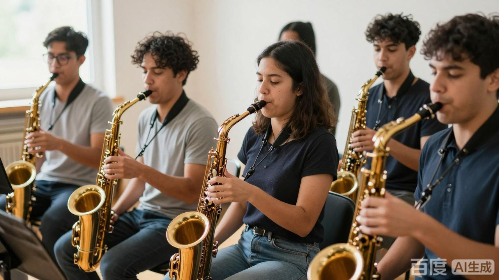

萨克斯社的日常以排练为主。每周三晚上进行声部分排，按高音、中音、次中音、上低音四个声部分头练习； 每周六下午进行全团合奏，把一周练过的片段合在一起走台。 零基础的同学会被编入基础班，由高年级社员一对一带练，从口型、长音、吐音开始。
排练地点在音乐楼排练厅 203，社团有公用萨克斯可以借用， 新成员不需要自己购买乐器。
本学期的演出安排包括：4 月第 2 周的校园草地音乐会、6 月第 1 周的期末专场音乐会， 以及学期中间不定期参加的城市音乐角快闪活动。 每次演出前两周会集中加排，具体时间在社团群里通知。

上图为社团合奏排练时的场景。平时的训练与排练，都会在正式演出中得到充分的展示机会。
所有活动对在册社员免费。想参加的同学可以先在招新网页填写在线报名表， 社团会通过电话或短信通知面谈与试音时间。 第一次来不需要带乐器，社团会提供公用乐器与哨片。
校园萨克斯社 · 2026 年招新网页